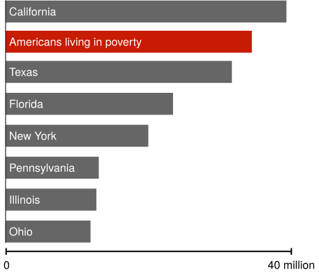
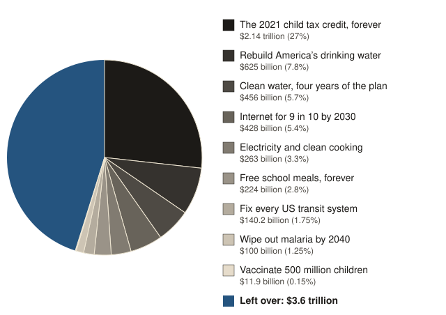

Wealth shown to scale
Created by Matt Korostoff in 2020. This is a fork of eattherichtextformat/1-pixel-wealth, updated with 2026 figures.
This dot is $1,000. Every amount on this page is drawn at that scale.
$1,000
$87,460 (Median US household income)
$1 million
$1 billion
$908 billion (wealth of Elon Musk)Forbes 400, September 2026
How big is $908 billion?
Lol, just kidding, we're less than a tenth of the way. Keep scrolling though, there's more to see.
Where does his money come from?
Almost none of it is cash in a bank. It is mostly shares in companies. He owns 38% of SpaceX (counting options), the rocket company he founded in 2002. SpaceX bought his AI company, xAI, in February and went public in June in the biggest IPO in history. He also owns nearly 11% of Tesla, plus stakes in The Boring Company and Neuralink.
So his fortune rises and falls with stock prices. When SpaceX started trading, he briefly became the world’s first trillionaire.
How long would you have to work to earn it?
To earn Elon’s fortune, the teacher would have to work for about 12 million years, and the warehouse worker for about 19 million.
What do people typically earn in a lifetime?
How does he compare with other rich people?
Even the fortunes of very rich people are dwarfed by the incomprehensible wealth of the 0.0001%.
These people may see themselves as fabulously rich, and often oppose policies aimed at reducing inequality.
But many have not fully grasped the enormous gulf between themselves and the super rich.
Jeff Bezos: $378 billion (Forbes 400, September 2026, via CNN)
We can have a world in which wealthy people exist, without handing nearly all new wealth to the super rich. In 2017, 82% of the wealth created worldwide went to the richest 1%, according to Oxfam, an anti-poverty advocacy group.
No single human needs or deserves this much wealth.
How does it compare with what the US spends?
What could Elon Musk alone pay for?
In 2021, the head of the World Food Programme said $6 billion from billionaires could save 42 million people on the brink of famine. Musk replied that if the WFP could explain how, he would sell Tesla stock and do it. The WFP published its plan. Musk never funded it.
What has Elon actually spent it on?
And what did he take away?
From January to May 2025, Musk led the Department of Government Efficiency, or DOGE, the White House’s drive to cut federal spending. On February 3, he posted that DOGE had spent the weekend “feeding USAID into the wood chipper.” USAID, the agency that ran most American foreign aid, closed for good on July 1.
DOGE claimed it saved about $215 billion. In August 2026, the Government Accountability Office checked the $110 billion of that claimed from contracts, grants and leases, and found problems “limiting the transparency and reliability” of the numbers. Of the 13,476 contracts DOGE said it ended, 2,503 had never been terminated.
Lives, not dollars
Children Adults Each dot is 1,000 people.
By January 2026, a year after the cuts to American foreign aid began, more than 750,000 people had died because of them, more than 500,000 of them children, according to estimates by Brooke Nichols, a disease modeler at Boston University. They are model estimates, not a count, and they have not been peer-reviewed. AFP, via the Taipei Times, January 2026
If the cuts last, a study in The Lancet projects more than 14 million additional deaths by 2030, about 4.5 million of them children under five.
400 richest Americans ($8 trillion)Forbes 400, September 2026
A trillion dollars is such a large figure, that you might as well say "eleventy gajillion zillion dollars." So in this section, we will try to understand the scale of this figure by looking at what could be accomplished with various chunks of this wealth.
As we proceed, try to keep in mind: all of this wealth is controlled by a group so small, that they could fit on a single 747 airplane—with 260 seats left over (in the 660-seat 747-400D).

First, a look back at 2020.
There are about 135 million households in the United States. A $1,200 check for every one of them would cost about $162 billion today, about 2% of the wealth controlled by the 400 richest Americans.
The 2020 coronavirus stimulus was the largest rescue package in American history. It was financed entirely through deficit spending, which will be repaid by taxpayers for generations. The burden of repaying this debt could be erased in an instant with a tax on the super rich so small that they would not even feel it.
The wealth of the 400 richest Americans today could pay for the entire $2.2 trillion CARES act, including the corporate bailouts, expanded unemployment, and expanded testing—with nearly $6 trillion left over.
Instead, American taxpayers are still paying the bill.
What could we do with this money?
Each program below is drawn to scale, at $1,000 per square pixel. As you scroll through one, the pie under the bar takes its share out of the 400 richest Americans’ wealth.
Malaria is one of the worst infectious diseases ever visited on mankind, possibly killing more people than any other infectious disease in history. In the 20th century alone, malaria killed an estimated 150 to 300 million people.
Coronavirus showed us all the horrors of living with a deadly disease. Sadly, for much of the world, this horror was a constant feature of daily life long before coronavirus, and it still is.
People killed by COVID-19, malaria and Ebola
Malaria is still killing people at that pace. In 2024, it killed about 610,000 people, 95% of them in Africa. These figures are even more shocking when you learn that malaria overwhelmingly kills children: around three-quarters of the malaria deaths in Africa are children under five. That's around 434,000 African children every year.
Children under five killed by malaria in Africa in one year: about 434,000.
Each dot is 100 children, shown sped up.
All of these deaths are preventable. Treating and preventing malaria is a well understood science, universally practiced in the developed world.
The Gates Foundation estimates that wiping out malaria worldwide by 2040 would cost $90 billion to $120 billion, around $100 billion. That’s about 1.25% of the wealth currently possessed by the 400 richest Americans.
Around 1,200 children in Africa will die of malaria today. A small group of super rich people could stop it for a sum of money so small that they would likely never even notice its absence. But they choose not to.
As of 2025, about 34.5 million Americans lived in poverty. If Americans in poverty were a state, they would be the second largest by population, bigger than Texas.
Population of US States compared to poverty, 2025

In 2018, every single person in America could have been lifted above the poverty line with a one-time cash subsidy of around $10,500 per impoverished family (and about $7,500 for impoverished individuals), for a total of about $170 billion. Adjusted for inflation and for today's 34.5 million people in poverty, the same subsidy would cost roughly $195 billion, about 2.4% of the wealth currently controlled by 400 individuals.
It may seem counter intuitive that a one-time subsidy could have any lasting impact on chronic poverty. But one of the surprising truths about poverty is that it's fluid. Americans move in and out of poverty many times throughout their lives, and one good year can have a massive and long lasting effect.
A wealth of data now supports the idea that one-time cash transfers can permanently transform a local economy, according to research collected by GiveDirectly, a charity that gives cash to people in poverty. Given a sudden windfall, people invest in their future. They go back to school, obtain transportation, pay for childcare, pay down debilitating debts, and do any number of things to improve their career prospects and financial future.
In the US, for all of the people that escape poverty in any given year, about half stay out of poverty for at least five years afterwards. About a third are still out of poverty ten years later.
This would not be a permanent fix for all Americans. Surely, some would quickly return to poverty, and others face debts so large that the subsidy would make little difference. But for tens of millions of Americans, this would be a life changing event. It would be a generation defining social program that reshapes our economy for decades to come.
People in the United States owe at least $220 billion in medical debt, and about 14 million of them owe more than $1,000. Nobody chooses to get sick. All of this debt could be erased with about 2.75% of the wealth controlled by the 400 richest Americans.
Around 2.1 billion people still lack safe drinking water at home, and 106 million drink untreated water straight from rivers, lakes and ponds. About 354 million have no access to a toilet or latrine of any kind, and therefore defecate in the open.

No clean water
Contaminated water is a major source of disease, including cholera, dysentery, and typhoid. It is estimated that contaminated drinking water causes about 505,000 deaths from diarrhoea every year, making it one of the world's biggest killers. The World Bank estimates that bringing safe drinking water and sanitation to everyone on earth would cost about $114 billion a year, about 1.4% of the wealth controlled by the 400 richest Americans.
In 2020, as Americans debated how and when to open the economy after coronavirus, we were presented with a seemingly impossible choice between risking millions of lives and sliding into a great depression through a continued lock down. This was a repugnant lie.
The money to weather that storm existed, and it still exists. It's just a matter of finding the political will to take it.
About 42 million Americans owe a combined $1.7 trillion in federal student loans. In 2022, President Biden’s plan to cancel up to $20,000 per borrower would have cost about $400 billion, according to the Congressional Budget Office. The Supreme Court blocked it in 2023. The 400 richest Americans could pay for it with about 5% of their wealth.
Paying off the other $1.3 trillion, every federal student loan left after Biden’s plan, would take about 16% more.
What could we do with 46% of this money?

Pay off every federal student loan, give $10,000 to every household, lift every American out of poverty, wipe out all medical debt, eradicate malaria, and bring clean water and toilets to every human on earth for a year. All of it together would cost about $3.7 trillion, less than half of what these 400 people own.
Everything from here to the end of this bar is what the 400 would still own: about $4.3 trillion.
So why hasn't any of this happened?
Because a sliver of this wealth buys political power.
About 81% of that money went to super PACs. A super PAC can't hand money to a candidate, but it can spend unlimited amounts on ads and campaigns to elect or defeat one. Billionaire political spending is 53 times what it was in 2010, according to Americans for Tax Fairness, a progressive advocacy group.
Much of that lobbying money comes from corporations and industry groups, and it buys access to lawmakers. Together with election spending, it helps explain why proposals to tax the super rich so rarely become law.
That is what oligarchy means: a wealthy few with an outsized say in how everyone else is governed.
We cannot accept this level of inequality any longer.
Figures updated in November 2026. Every number on this page links to its source. The main ones: Wealth: Forbes 400 (September 2026; also Forbes Australia) and the Federal Reserve’s Distributional Financial Accounts (Q2 2026). Income and poverty: Census Bureau (2025). Population: Census Bureau Vintage 2025 estimates. Households: Census, via FRED (2025). Malaria: WHO World Malaria Report 2025; eradication cost: the Gates Foundation, via the Council on Foreign Relations. Water: WHO/UNICEF JMP 2025; cost: World Bank. Hunger: NPR and Global News (World Food Programme, 2021) and Ceres2030. Education: the Education Department’s 2025 budget plan for free community college (via EducationData) and the NACUBO-Commonfund Study of Endowments (FY2025 spending rate), CBO via NPR, and the NEA’s 2026 Rankings and Estimates (via NPR). Careers: Bureau of Labor Statistics, Occupational Outlook Handbook (median pay, May 2025), and Education pays, 2025 (high school graduates’ median weekly earnings). Retirement savings: the Federal Reserve’s 2025 Survey of Consumer Finances (table 6: the median value of all retirement accounts, such as 401(k)s and IRAs, for families aged 55–64 that have one; 63% do). Creators’ yearly earnings and Taylor Swift’s wealth: Forbes (Top Creators 2026; Forbes profiles). Lead pipes: Inside Climate News (January 2026). Cancer drug spending: Althemery (2025). Homeless veterans: Department of Veterans Affairs. Political spending: Americans for Tax Fairness, a progressive advocacy group (FEC data through August 2026), and CNN and OpenSecrets (FEC filings); Musk’s 2026 midterm spending: the Associated Press, via PBS NewsHour. Musk’s purchase of Twitter: NPR. DOGE: Live 5 News (Musk’s post, February 2025), CNBC (the Government Accountability Office’s August 2026 review of DOGE’s savings), CBS News (the Partnership for Public Service’s cost estimate), FedScoop (EPA cancellations), AFP, via the Taipei Times (Boston University’s death estimates, January 2026), and NPR and Courthouse News (The Lancet’s projection; USAID’s closing). Musk’s taxes: ProPublica (IRS data, 2014–2018) and CNBC (his statement on 2021). Home prices: National Association of Realtors (median existing-home price, September 2026). Musk’s holdings: Forbes profile (October 2026) and CBS News (the SpaceX IPO). Lobbying: LegiStorm, consistent with OpenSecrets and Bloomberg Government. Some numbers are our own arithmetic from these sources: lifetime earnings by job (median yearly pay × 40 years; retail at $17.03 an hour × 2,080 hours a year; a high school graduate at $966 a week × 52 weeks); about $47,800 a year ($23 an hour for 2,080 hours); about 12 million and 19 million years of work ($908 billion divided by a teacher’s $74,495 and a warehouse worker’s $47,840); 434,000 children (three-quarters of Africa’s 579,000 malaria deaths); about 1,200 a day, and one every 73 seconds; malaria deaths in early 2020 (a third of 2020’s 627,000); the cost of $1,200 and $10,000 for every household; the poverty estimate of $195 billion; $9 million per member of Congress; the $1.3 trillion in student loans left after Biden’s plan ($1.7 trillion less $400 billion); more than 21,000 homes a week ($9 billion / $417,500); a $184 billion endowment for community college ($9 billion a year / 4.9%); $132 billion to end hunger by 2030 ($33 billion a year × four years, 2027–2030); and $200 million as 0.05% of Jeff Bezos’s wealth ($200 million / $378 billion). Original project by Matt Korostoff, forked from eattherichtextformat/1-pixel-wealth.